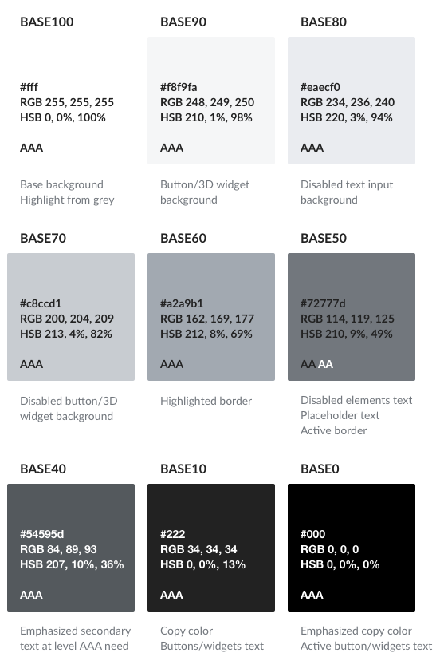

Visual Style
Wikimedia projects are associated with learning, editorship, and books. They are neutral and transparent. They are about reading and writing. They remind you of ink and paper.
Core Visual Identity
Our core visual identity presents our main content on a single main page or layer.
We emphasise content by using only this single layer, which sits on top of a base gray surface that contains the chrome (structural elements of content which also host controls).
Colors
For the color palette we chose colors that depict our character and also bring a hint of freshness to our products.
Making the content readable for everyone was our main goal for defining our palette. Accessibility considerations have been our top priority when choosing each color (WCAG conformance level is indicated for each color based on their contrast against white and black).
Base colors
Base colors define the surface where content lives and the main color for content. Different shades of paper and ink are useful to emphasise or de-emphasise different content areas.
Base colors go from pure white (Base100) to pure black (Base0). Intermediate shades of grey include a tint of blue for a better harmony with our accent color.
When applying text on a surface, you need to check the color contrast between the text and the background. Base50…0 are safe text colors for a white surface. Base100…50 are safe text colors for a black surface.
Accent colors
Accent colors are used to emphasise actions and highlight key information. Blue is a natural choice in our context, where it has been the default color used for links, conveying the idea of action.
There are three shades provided for situations where you need a lighter (Accent90), regular (Accent50) or darker (Accent10) version.
Accent50 provides a blue which is suitable to be used for text and as background. When used for text (as in links) it provides enough contrast with black text to notice the difference. When used as background, it provides enough contrast with white text to keep the text readable.

Supplementary colors
Red, green, and yellow are supplementary colors. They can act as accent colors bringing the additional meaning that is commonly associated with them.

Additional colors
For some uses such as charts and data visualisation, a broader color palette may be needed. When extending the default palette with new colors, make sure to check their contrast with other colors according to their use, and how they are perceived for different color-blind conditions.
Typography
Because so much of Wikipedia and wiki projects rely on writing and reading, typography is a key component of Wikimedia design. You need to consider the typeface, size, style and spacing of your text to make it achieve a good readability.
This section is currently under development. See dev branch of this repo for up-to-date discussion results.
Icons
Icons help convey a message visually.Icon style
Icons should be simple. They use monochromatic vector-based shapes with the following properties:
- Filled areas. Shapes are defined by filled areas as opposed to outlines.
- Rounded corners. Corners are slightly rounded to make shapes more friendly and welcoming, but not too much to look goofy.
- Medium thick strokes. Strokes should be visible at smaller sizes without effort.
- Diagonal cross-out lines. Icons with a cross-out line will have it from the top-left to the bottom right (like “\”).
Using icons
The icon repository provides a list of the currently available icons.
When using icons you need to consider the size of their target area. Even if icons are presented at a smaller size, you need to make sure that the associated active area is at least 48x48sp. Otherwise users may fail to hit the active area, not getting the expected result.
Creating icons
Icons follow a template. The default canvas is 24x24px. In order to allow for optical adjustments, a different margin will be applied depending on the shape of the icon.
Icons are created using black (Base0). Their color can be changed when the icon is used (preferably done automatically by software).
The simple style and guidelines make it easy to reuse or adapt existign freely licensed icons that you can find on other repos such as material icons or the noun project. You are welcome to use existing icons that align to the proposed style instead of reinventing the wheel icon.